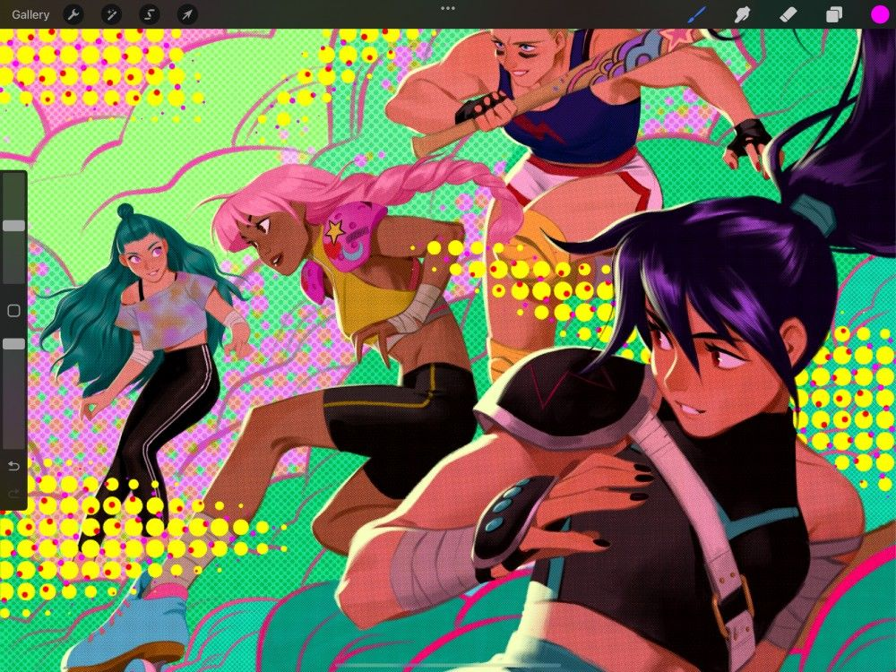
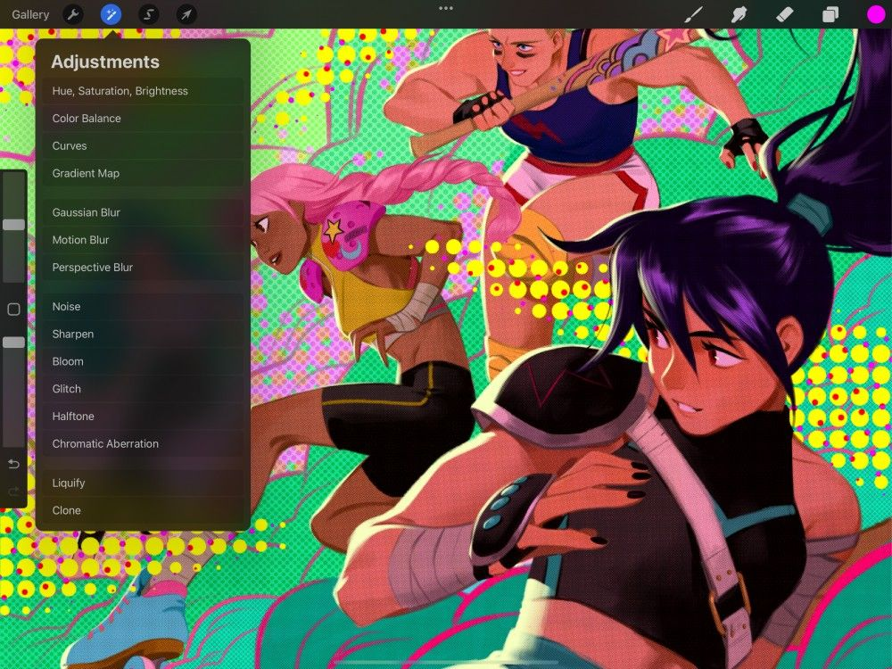
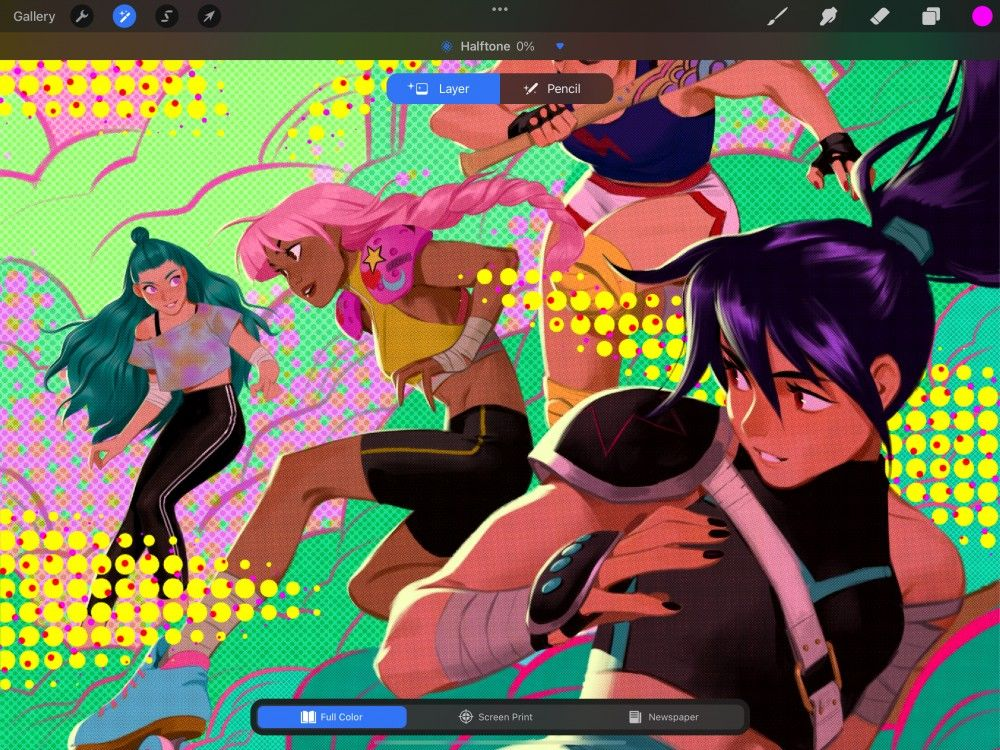
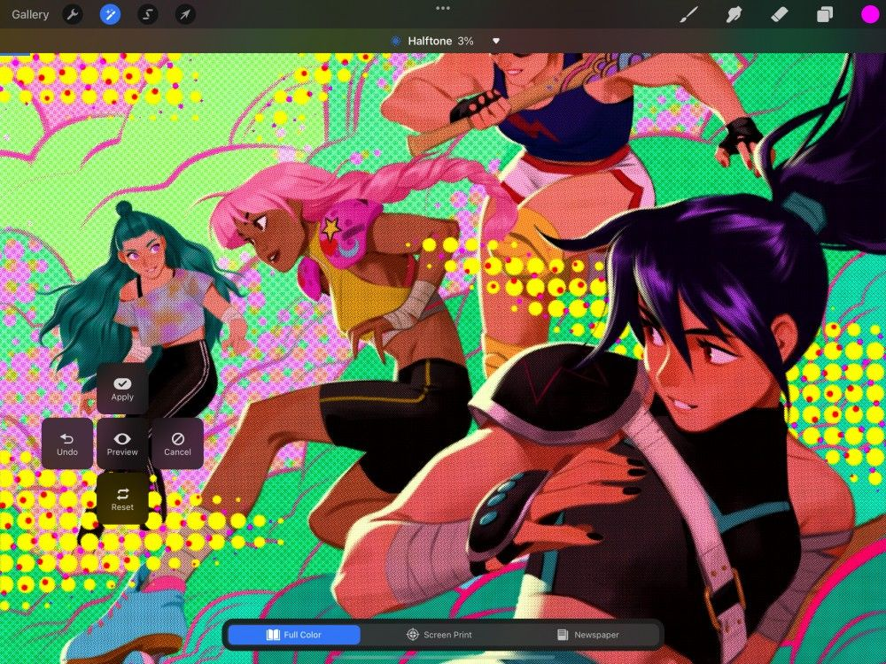

📖 Đã dịch sang tiếng Việt. Thuật ngữ chuyên môn giữ tiếng Anh — rê chuột để xem nghĩa (tooltip).
Interface & Gestures
Mang cho tác phẩm của bạn nét hoàn thiện chuyên nghiệp với những khả năng tuyệt vời của menu Adjustments (điều chỉnh).
Giao diện
Truy cập các bộ lọc và hiệu ứng chất lượng điện ảnh trong menu Adjustments mạnh mẽ.


Adjustments Button (Nút Adjustments)
Ở thanh menu trên cùng bạn sẽ thấy biểu tượng đũa thần. Đó chính là biểu tượng Adjustments.
Chạm vào nó để mở menu Adjustments.

Adjustments Menu (Menu Adjustments)
Hoàn thiện hình ảnh của bạn với hai kiểu điều chỉnh khác nhau.
Có hai kiểu điều chỉnh sẵn có qua menu — Adjustments và Filters (bộ lọc). Adjustments điều chỉnh màu sắc bên trong hình ảnh. Filters tác động lên hình ảnh thông qua việc xử lý pixel và các hiệu ứng đặc biệt.
Adjustments (Điều chỉnh)
Procreate dành nửa trên của menu cho các điều chỉnh màu. Bốn công cụ đa năng, chuyên nghiệp này sẽ điều chỉnh và cân bằng màu sắc trong hình ảnh của bạn.
Chạm vào một adjustment để kích hoạt nó, sau đó áp dụng bằng thanh công cụ ở dưới cùng màn hình.
Khi được kích hoạt, một adjustment sẽ ảnh hưởng đến lớp primary hiện tại của bạn.
Nửa dưới của menu Adjustments cung cấp 11 bộ lọc mạnh mẽ. Dùng chúng để điều chỉnh hình ảnh nhanh, đơn giản và tạo các hiệu ứng đặc biệt thú vị.
Chạm vào một bộ lọc để kích hoạt, sau đó điều chỉnh bằng các cử chỉ trên màn hình được mô tả bên dưới.
Layer and Pencil Filters (Bộ lọc theo Lớp và theo Pencil)
Áp dụng bộ lọc và điều chỉnh màu bằng hai chế độ khác nhau — Layer Filters (bộ lọc theo lớp) và Pencil Filters (bộ lọc theo Pencil).

Bạn có thể áp dụng Adjustments và Filters trên toàn bộ một ảnh hoặc lớp bằng Layer Filters. Hoặc bạn có thể vẽ chúng bằng cọ lên một phần ảnh bên trong một lớp bằng Pencil Filters. Một số bộ lọc như Liquify hay Clone chỉ khả dụng dưới dạng Layer Filters.
Khi bạn chọn một adjustment hoặc filter, một menu thả xuống sẽ xuất hiện ở thanh trên cùng, cạnh phần trăm % của adjustment hoặc filter đó.
Chạm vào hình tam giác nhỏ cạnh biểu tượng % ở thanh trên cùng để hiện tùy chọn dùng Layer hoặc Pencil. Chạm nút Layer hoặc Pencil để chọn chế độ bạn muốn.
Khi dùng Pencil Filters, một tia sáng nhỏ sẽ xuất hiện trên biểu tượng cọ ở trên cùng khung vẽ. Bạn vẫn có thể chọn cọ khi đang dùng Pencil Filter. Nhưng cọ đó giờ sẽ vẽ hiệu ứng adjustment hoặc filter mà bạn đã chọn lên lớp của mình.
Pencil Filters cũng hoạt động với công cụ Smudge hoặc Erase để làm nhòe hoặc tẩy bất kỳ phần filter nào bạn đã vẽ. Lần nữa, một tia sáng sẽ xuất hiện trên biểu tượng Smudge hoặc Erase cho biết bạn đang ở chế độ Pencil Filter.
Adjustments (Điều chỉnh)
Đưa tác phẩm của bạn lên tầm cao mới với các công cụ điều chỉnh màu theo tiêu chuẩn ngành.
Procreate dành nửa trên của menu cho điều chỉnh màu, mang đến nhiều cách để tạo ra các ảnh có màu được cân bằng. Đọc tiếp để xem tổng quan ngắn gọn về từng điều chỉnh màu. Hoặc khám phá sâu hơn từng công cụ qua các trang Sổ tay tiếp theo.
Hue, Saturation, Brightness (Sắc độ, Độ bão hòa, Độ sáng)
Thay đổi sức sống và độ sáng của hình ảnh.
Điều chỉnh giá trị màu, sức sống và độ sáng trong ảnh bằng các thanh trượt đơn giản.
Điều chỉnh Hue (sắc độ), Saturation (độ bão hòa) và Brightness (độ sáng) bằng các thanh trượt để tạo ra những thay đổi nổi bật cho màu sắc của ảnh.
Color Balance (Cân bằng màu)
Hiệu chỉnh hoặc cách điệu sơ đồ màu của bạn bằng cách thay đổi sự cân bằng giữa các sắc độ tạo nên tác phẩm.
Tinh chỉnh các giá trị tông màu của tác phẩm bằng các thanh trượt color balance. Dùng các nút để áp dụng thay đổi chỉ cho vùng sáng, tông giữa hoặc vùng tối của tác phẩm.
Thay đổi cân bằng màu và tông màu trong ảnh bằng một thao tác trơn tru bằng đồ thị Curves.
Điều chỉnh gamma tổng thể và lượng Đỏ, Lục, Lam trong ảnh. Thực hiện bằng một đường cong trực quan cùng biểu đồ histogram hữu ích, thể hiện rõ phân bố màu trong ảnh của bạn.
Gradient Map (Ánh xạ gradient)
Ánh xạ các màu thay thế cho vùng sáng, tông giữa và vùng tối của ảnh.
Ánh xạ nhiều bảng màu gradient có sẵn và tùy chỉnh lên ảnh bằng cách ánh xạ gradient.
Tìm hiểu thêm về Color Adjustments
Filters
Blur (làm mờ), Sharpen (làm nét) và Liquify (làm loãng) hình ảnh của bạn cùng nhiều thứ khác. Procreate mang đến dải hiệu ứng đặc biệt thú vị với 11 bộ lọc mạnh mẽ này.
The Adjustments Menu (Menu Adjustments)
Truy cập các bộ lọc và hiệu ứng chất lượng điện ảnh trong menu Adjustments mạnh mẽ.
Procreate dành nửa dưới của menu Adjustments cho Filters. Đây là những công cụ nhanh được thiết kế để tạo ra nhiều hiệu ứng thị giác thú vị và nổi bật. Đọc tiếp để xem tổng quan ngắn gọn về từng hiệu ứng. Hoặc khám phá sâu hơn từng công cụ qua các trang Sổ tay tiếp theo.
Gaussian Blur
Làm mịn và mềm hình ảnh của bạn.
Mang cho ảnh một diện mạo mềm mại, hơi mất nét. Kéo ngón tay sang phải hoặc trái để áp dụng một độ mờ đều lên lớp hiện tại.
Tìm hiểu thêm về Blur.
Motion Blur
Tạo ảo giác về chuyển động nhanh.
Tạo cảm giác về tốc độ và chuyển động bằng cách áp dụng một độ mờ có vệt lên lớp theo hướng bạn kéo ngón tay.
Tìm hiểu thêm về Blur.
Perspective Blur
Tạo hiệu ứng thu phóng và bung tỏa.
Kéo một đĩa vào vị trí để đặt điểm tâm, và kéo bên ngoài đĩa để tạo độ mờ. Cài đặt Positional sẽ tỏa độ mờ ra mọi hướng từ điểm tâm. Cài đặt Directional sẽ làm mờ theo một hướng duy nhất.
Tìm hiểu thêm về Blur.
Thêm grain (hạt) vào ảnh để có cảm giác tự nhiên của cuộn phim cũ hoặc báo in.
Tăng hoặc giảm độ hạt của ảnh bằng cách kéo ngón tay sang phải hoặc trái. Chọn một trong ba loại Noise (nhiễu) — Clouds, Billows và Ridges. Điều chỉnh Scale, Octave và Turbulence để kiểm soát cách Noise hiển thị.
Tìm hiểu thêm về Noise.
Tôn lên chi tiết trong ảnh để có diện mạo sắc nét, tập trung.
Kéo ngón tay sang trái hoặc phải để đặt mức độ làm nét mà bạn áp dụng lên ảnh.
Tìm hiểu thêm về Sharpen.
Tạo ảo giác về ánh sáng phát quang.
Tạo các hiệu ứng ánh sáng trông chân thực lên một đối tượng cô lập hoặc trên toàn bộ ảnh. Điều chỉnh Transition, Size và Burn để kiểm soát cách Bloom hiển thị.
Tìm hiểu thêm về Bloom.
Thêm các glitch (nhiễu) và biến dạng lấy cảm hứng từ video analog và kỹ thuật số vào tác phẩm.
Thêm bốn kiểu hiệu ứng Glitch kỹ thuật số khác nhau — Artifact, Wave, Signal và Diverge. Điều chỉnh cách chúng tương tác với tác phẩm bằng các điều khiển riêng cho từng hiệu ứng.
Tìm hiểu thêm về Glitch.
Halftone (Bản điểm)
Tạo hiệu ứng in bản điểm (halftone) màu kiểu tạp chí hoặc báo cũ.
Chọn giữa Full Color, Screen Print hoặc Newspaper, và kiểm soát kích thước hoa văn bản điểm.
Tìm hiểu thêm về Halftone.
Chromatic Aberration (Quang sai sắc)
Dịch chuyển mặt phẳng đỏ và lam của ảnh RGB để mô phỏng hiệu ứng Chromatic Aberration của ống kính máy ảnh.
Áp dụng Chromatic Aberration theo hướng tâm từ một điểm tiêu điểm bằng Perspective. Hoặc áp dụng theo chiều ngang và dọc bằng chế độ Displacement.
Tìm hiểu thêm về Chromatic Aberration.
Biến dạng pixel trong lớp của bạn để tạo ra nhiều hiệu ứng vặn méo ngoạn mục.
Sử dụng các hiệu ứng Liquify phi thường lên ảnh chỉ bằng một cú chạm. Chọn từ các chế độ Push, Twirl, Pinch, Expand, Crystals và Edge. Kiểm soát Size, Distortion, Pressure và Momentum của hiệu ứng và điều chỉnh lượng để tái cấu trúc ảnh.
Tìm hiểu thêm về Liquify.
Vẽ một phần của ảnh lên một phần khác để nhân bản nhanh và tự nhiên. Hoặc thay thế tức thời một phần ảnh bằng một phần khác.
Đặt một đĩa lên phần ảnh bạn muốn nhân bản, rồi vẽ ở nơi bạn muốn bản sao mới xuất hiện.
Tìm hiểu thêm về Clone.
Adjustments Actions (Các thao tác Adjustments)
Áp dụng, xem trước và chỉnh sửa các thay đổi của bạn bằng Adjustments Actions.

Khi đang dùng Adjustments, chạm vào khung vẽ sẽ mở Adjustments Actions menu, cung cấp năm tùy chọn:
- Xem trước toàn bộ thay đổi khi ‘bật’ và ‘tắt’;
- Áp dụng toàn bộ thay đổi và ở lại trong giao diện;
- Đặt lại toàn bộ thay đổi và ở lại trong giao diện;
- Hoàn tác thay đổi cuối cùng và ở lại trong giao diện.
- Hủy toàn bộ thay đổi của bạn và thoát khỏi giao diện.
Nhấn Apply để lưu lại những thay đổi bạn muốn giữ, sau đó nhấn Cancel để thoát Adjustments.
Still have questions?
If you didn't find what you're looking for, explore our video resources on YouTube or contact us directly. We’re always happy to help.